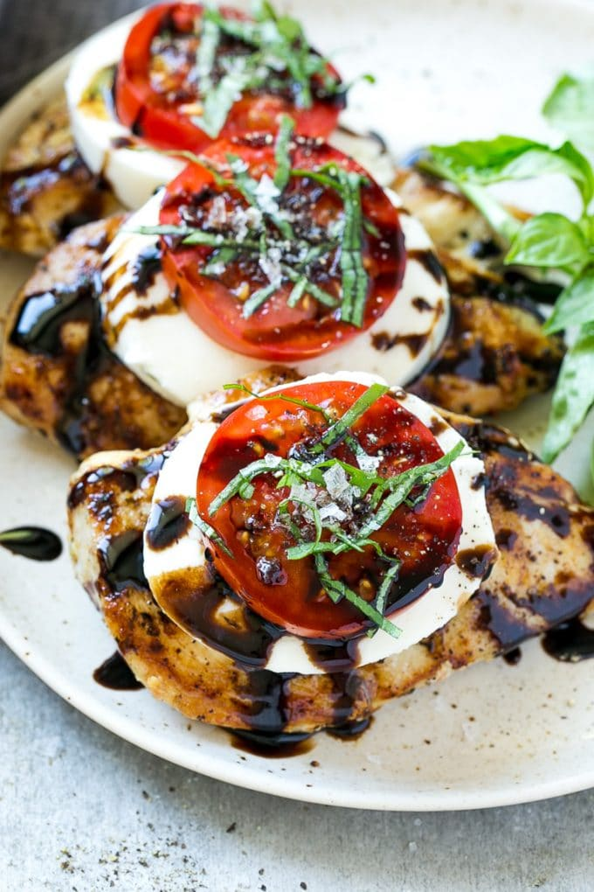

CAPRESE CHICKEN

A delicious light dinner composed of sliced tomatoes, fresh
mozzarella, and basil, sprinkled with salt and drizzled with
olive oil that goes well with some roasted potatoes or a
salad. If you are looking for a new way to enjoy chicken
then give this a try.
The Caprese salad is a classic Italian dish.
You might notice that the three main ingredients are the colors of the Italian flag. The red of the tomato, the green of the basil, and the white
of the cheese are meant to represent the flag of Italy. Not only do these ingredients represent the colors of Italy, but they are traditional food
products of Italy as well.
Ingredients:
- 20 ounces skinless boneless chicken breast, trimmed of visible fat (about 3 breasts)
- 1 quart homemade or store-bought low sodium chicken broth
- 1/4 cup lightly packed basil leaves, torn
- Kosher salt
- 1 teaspoon whole black peppercorns
- 1 teaspoon zest from 1 lemon
- 6 tablespoons extra virgin olive oil
- 3 tablespoons balsamic vinegar
- 1/4 to 1/2 teaspoon red pepper flakes
- Freshly ground black pepper
- 1 pound rigatoni or other sturdy tubular pasta
- 1 quart cherry tomatoes, halved
- 12 ounces fresh mozzarella, cut into 1/2-inch pieces
- 1 cup lightly packed basil leaves, rough chopped
Steps:
- Place chicken breasts in saucepan with chicken broth, basil, 2 teaspoons kosher salt, peppercorns, and zest. If needed, add water to just
cover chicken. Heat over medium heat until broth comes to simmer. Reduce heat to low and gently simmer until chicken reads 155°F on instant read thermometer, about 10 minutes. Remove from heat.
- Place chicken on cutting board and when cool enough to handle, use 2 forks to shred chicken into chunky bite size pieces. Return chicken to broth off heat until ready to use.
- In medium bowl, slowly whisk olive oil into balsamic vinegar until combined. Add red pepper flakes, season to taste with salt and pepper, and set aside.
- Cook pasta in salted water according to package directions. Drain. Using slotted spoon, remove chicken from broth. Reserve broth for another use.
- Return pasta to pot and toss with chicken, tomatoes, mozzarella, basil, and balsamic dressing. Season to taste with salt and pepper and serve.
Go back